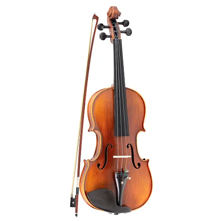

Cordas
-

Violino
O menor e mais agudo dos instrumentos de cordas. Com sua sonoridade brilhante, é essencial para liderar as melodias e enriquecer os arranjos dos hinos.
Voz Principal: Soprano e Soprano 8ª acima -

Viola
Parecida com o violino, mas com um som mais grave e encorpado, complementando a harmonia com suavidade.
Voz Principal: Tenor. -

Violoncello
Conhecido por seu tom profundo e emotivo, o cello adiciona riqueza e profundidade às músicas, trazendo uma base melódica marcante.
Voz principal: Baixo.